The control surface at http://localhost:8899 — the simple view for the household, the advanced view for you.
What ferrule serve shows before anything is routed.
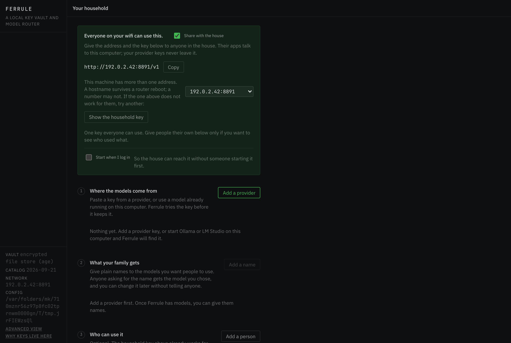
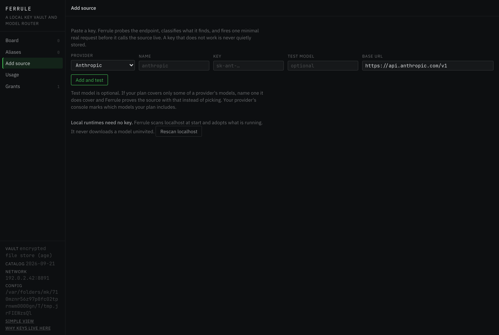
The simple view: what to hand out, and what Ferrule found.
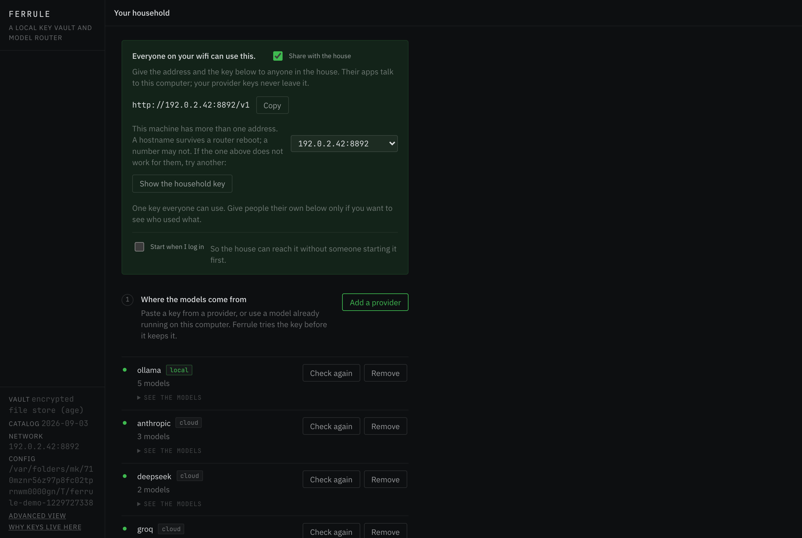
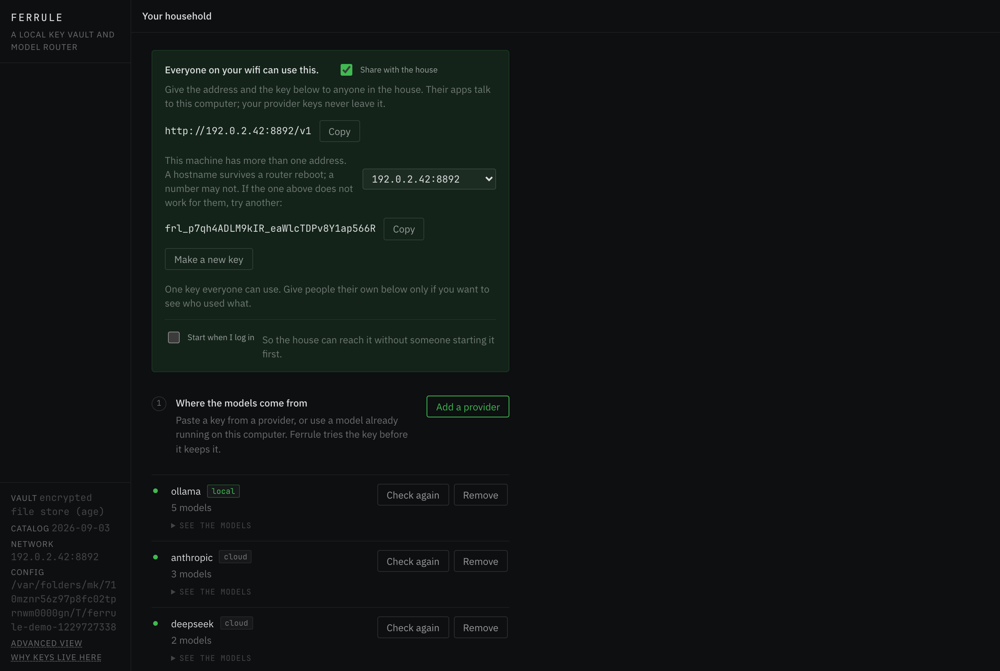
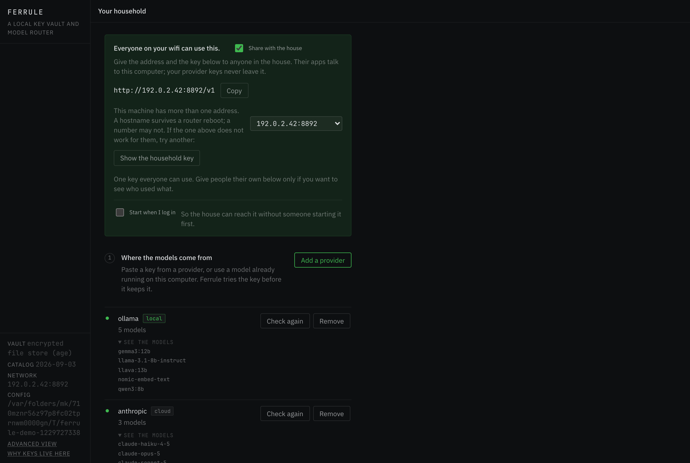
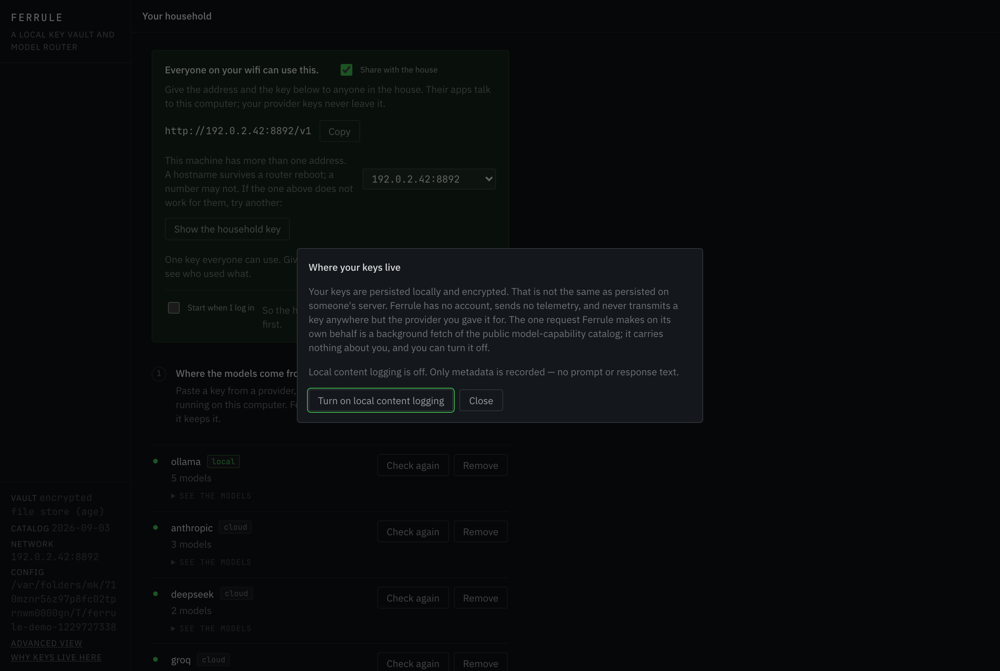
The advanced view: every model, and the sources behind them.
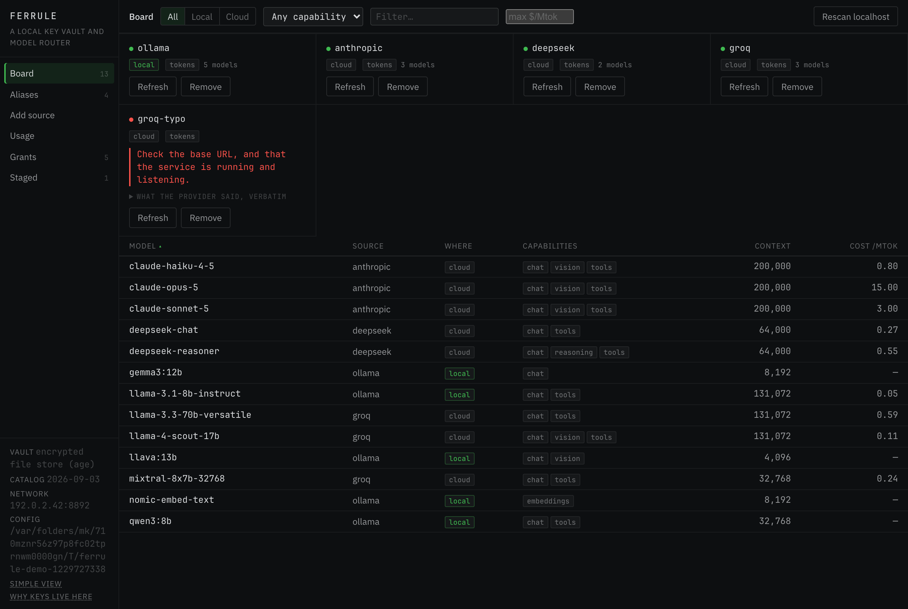
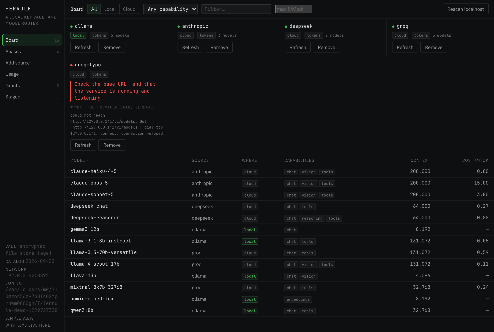
Names apps can ask for, and how a source is added.
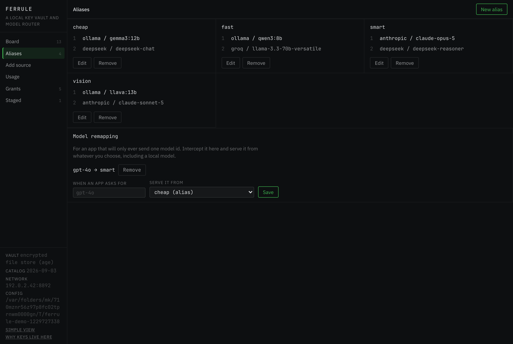
fast; you decide what fast means, and change it without telling anyone.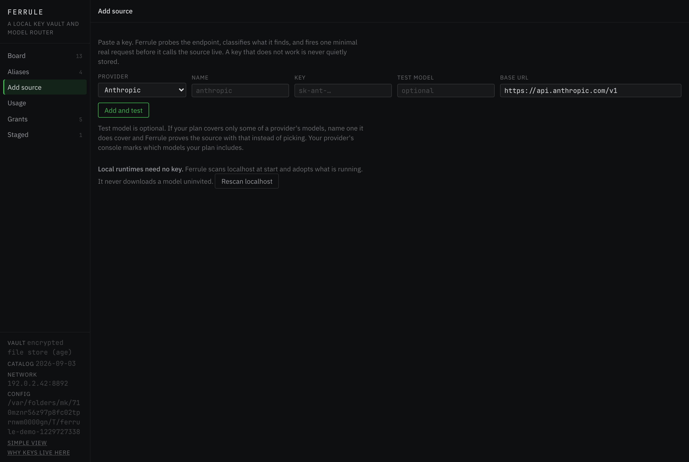
What it cost, where it went, what went wrong.
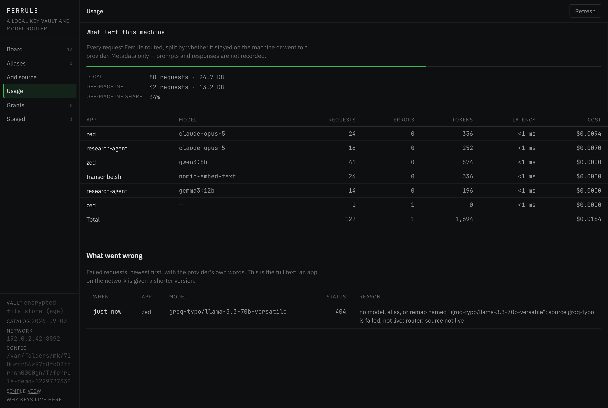
Who holds a token; what an agent has proposed.
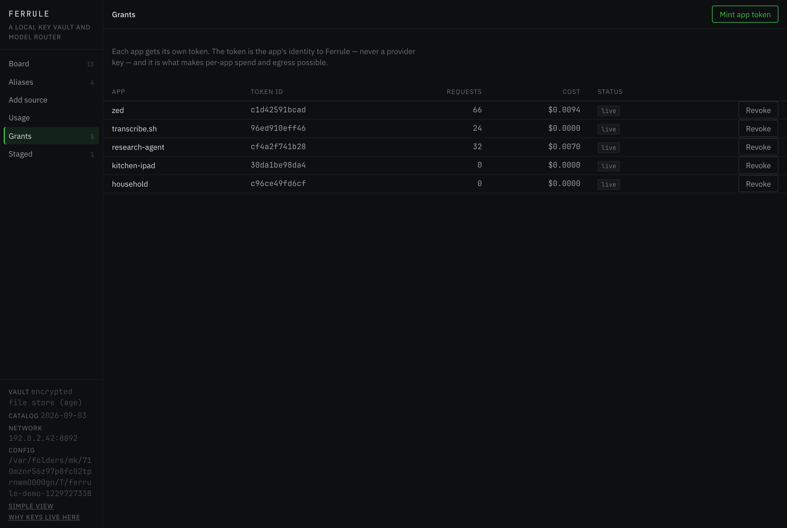
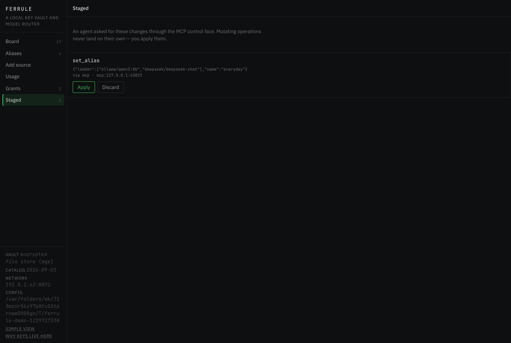
A person on the wifi with the address and a key. They never see the panel; their app talks to the endpoint.
The OpenAI-compatible lane, with a Ferrule token.
$ curl -s http://127.0.0.1:8892/v1/models -H "Authorization: Bearer $FERRULE_KEY" | python3 -m json.tool | head -24 { "data": [ { "ferrule": { "capabilities": [ "chat" ], "context_length": 8192, "source": "ollama", "where": "local" }, "id": "gemma3:12b", "object": "model", "owned_by": "ollama" }, { "ferrule": { "capabilities": [ "chat", "tools" ], "context_length": 131072, "source": "ollama", "where": "local"
ferrule in each entry says where the model runs.$ curl -s http://127.0.0.1:8892/v1/chat/completions \ -H "Authorization: Bearer $FERRULE_KEY" -H 'Content-Type: application/json' \ -d '{"model":"fast","messages":[{"role":"user","content":"Say hello in five words."}]}' | python3 -m json.tool { "choices": [ { "finish_reason": "stop", "index": 0, "message": { "content": "ferrule routed this", "role": "assistant" } } ], "id": "chatcmpl-mock", "model": "qwen3:8b", "object": "chat.completion", "usage": { "completion_tokens": 3, "prompt_tokens": 11, "total_tokens": 14 } }
fast and the first reachable rung serves it — here a local model, so the request never left the machine.$ curl -s -i http://127.0.0.1:8892/v1/models | head -12 HTTP/1.1 401 Unauthorized Content-Type: application/json Date: Mon, 21 Sep 2026 16:27:53 GMT Content-Length: 134 {"error":{"code":401,"message":"missing Authorization header — pass a Ferrule app token as a Bearer token","type":"ferrule_error"}}
$ curl -s http://127.0.0.1:8892/v1/chat/completions \ -H "Authorization: Bearer $FERRULE_KEY" -H 'Content-Type: application/json' \ -d '{"model":"groq-typo/llama-3.3-70b-versatile","messages":[{"role":"user","content":"hi"}]}' | python3 -m json.tool { "error": { "code": 404, "message": "no model, alias, or remap named \"groq-typo/llama-3.3-70b-versatile\": source groq-typo is failed, not live: router: source not live", "type": "ferrule_error" } }
Every panel operation is also a verb. The CLI reads and writes the same state the daemon serves.
Status, models, aliases, usage.
$ ferrule --help ferrule — a local key vault and model router Verbs: status the whole situation in one read (--json for an agent) serve start the daemon (endpoints + control surface) open make sure it is running, then show the panel startup start Ferrule when you log in (on | off) add add a source (paste a key, or adopt a detected runtime) ls list sources / models / aliases refresh re-check a stored source, using the key it already holds rm remove a source, its models, and its key alias create, edit, or remove an alias remap serve a hardcoded model id from a model of your choosing key mint or revoke an app token usage per-app and per-model spend, volume, and egress export write a portable encrypted configuration file import read a portable encrypted configuration file version print the version Exit codes: 0 the thing worked · 1 it did not, and the reason says why · 2 the command was wrong.
$ ferrule status ferrule dev · http://127.0.0.1:8892/v1 SOURCE WHERE LANE STATUS DETAIL ollama local tokens live anthropic cloud tokens live deepseek cloud tokens live groq cloud tokens live groq-typo cloud tokens failed unreachable · could not reach http://127.0.0.1:1/v1/models: Get "http://127.0.0.1:1/v1/models": dial tcp… 13 model(s) servable — 5 local, 8 cloud chat 12 · embeddings 1 · reasoning 1 · tools 10 · vision 5 ALIAS RUNGS SERVING cheap 2 ollama/gemma3:12b fast 2 ollama/qwen3:8b smart 2 anthropic/claude-opus-5 vision 2 ollama/llava:13b 3 app token(s), 3 live · last 24h: 78 local, 42 off-machine vault encrypted file store (age) · catalog 2026-09-03 (stale) next: groq-typo — could not reach http://127.0.0.1:1/v1/models: Get "http://127.0.0.1:1/v1/models": dial tcp 127.0.0.1:1: connect: connection refused · Check the base URL, and that the service is running and listening. The capability catalog has not refreshed in over a day. Costs and context lengths may be behind.
next: list of anything that needs you. --json for an agent.$ ferrule ls models MODEL SOURCE WHERE CAPABILITIES CONTEXT IN $/M OUT $/M claude-haiku-4-5 anthropic cloud chat,vision,tools 200000 0.80 4.00 claude-opus-5 anthropic cloud chat,vision,tools 200000 15.00 75.00 claude-sonnet-5 anthropic cloud chat,vision,tools 200000 3.00 15.00 deepseek-chat deepseek cloud chat,tools 64000 0.27 1.10 deepseek-reasoner deepseek cloud chat,reasoning,tools 64000 0.55 2.19 gemma3:12b ollama local chat 8192 — — llama-3.1-8b-instruct ollama local chat,tools 131072 0.05 0.08 llama-3.3-70b-versatile groq cloud chat,tools 131072 0.59 0.79 llama-4-scout-17b groq cloud chat,vision,tools 131072 0.11 0.34 llava:13b ollama local chat,vision 4096 — — mixtral-8x7b-32768 groq cloud chat,tools 32768 0.24 0.24 nomic-embed-text ollama local embeddings 8192 — — qwen3:8b ollama local chat,tools 32768 — —
$ ferrule ls models --local MODEL SOURCE WHERE CAPABILITIES CONTEXT IN $/M OUT $/M gemma3:12b ollama local chat 8192 — — llama-3.1-8b-instruct ollama local chat,tools 131072 0.05 0.08 llava:13b ollama local chat,vision 4096 — — nomic-embed-text ollama local embeddings 8192 — — qwen3:8b ollama local chat,tools 32768 — —
--local narrows to models on this machine — the ones whose requests never leave it.$ ferrule alias ALIAS LADDER cheap ollama/gemma3:12b → deepseek/deepseek-chat fast ollama/qwen3:8b → groq/llama-3.3-70b-versatile smart anthropic/claude-opus-5 → deepseek/deepseek-reasoner vision ollama/llava:13b → anthropic/claude-sonnet-5
ferrule alias <name> <src>/<model> … sets one.$ ferrule usage GROUP REQUESTS ERRORS TOKENS LATENCY COST zed / claude-opus-5 24 0 336 0ms $0.0094 research-agent / claude-opus-5 18 0 252 0ms $0.0070 zed / qwen3:8b 40 0 560 0ms $0.0000 transcribe.sh / nomic-embed-text 24 0 336 0ms $0.0000 research-agent / gemma3:12b 14 0 196 0ms $0.0000 Total 120 $0.0164
$ ferrule usage --egress WHERE REQUESTS BYTES local 78 24854 off-machine 42 13566 off-machine share 35%
One token per person or app.
$ ferrule key kitchen-ipad Minted app token for "kitchen-ipad". This is shown once: frl_fKSbN3RRarBseWtNHBx404j8_K4RnMqc Point the app at http://127.0.0.1:8892/v1 with this as its API key.
The agent face: llms.txt and an MCP manifest served by the daemon. Proposals stage; you apply.
Read the surface, then propose.
$ curl -s http://127.0.0.1:8892/llms.txt | head -30 # Ferrule > A local key vault for LLM provider keys, with an OpenAI-compatible router in front of > it. One Go binary. Keys are encrypted on the user's own disk; nothing is hosted. Ferrule is a **key vault first, a router second**. A person pastes a provider key once; Ferrule becomes the single encrypted local home for it. The unified endpoint, the model board, the alias ladders, and the spend/egress views all fall out of that. If you are an agent driving Ferrule, read this file and then call `brief`. Do not explore. ## Two things it does that alternatives do not - **Zero-config discovery.** No config file. It scans localhost for running runtimes (Ollama, LM Studio, llama.cpp) and adopts them; a cloud provider is *paste a key*. - **Egress visibility.** A local, metadata-only ledger of what actually left the machine, per app and per model — classified from the address the connection was made to. ## The three faces (they do not overlap) | Face | Path | Auth | |---|---|---| | Inference — raw tokens | `/v1/chat/completions`, `/v1/completions`, `/v1/embeddings`, `/v1/images/generations`, `/v1/models` | Ferrule app token, Bearer | | Inference — media passthrough | `/p/<source>/…`, provider's native shape, bytes unaltered | Ferrule app token | | Control | `/api/op/<name>`, `/mcp` | localhost + a per-run control token | The control face is **not** an inference path. Your own inference goes through the OpenAI-compatible endpoint like any other client. ## Driving inference
llms.txt: what Ferrule is and how to drive it, so an agent pointed at a live Ferrule gets the surface without the repo.$ curl -s http://127.0.0.1:8892/mcp | python3 -c 'import json,sys; m=json.load(sys.stdin); print(m["instructions"]); print(); [print(" "+t["name"].ljust(18), t["description"][:80]) for t in m["tools"]]' Ferrule's control plane. Read ops answer immediately. Mutating ops are staged and land only when the person applies them. Person-only ops cannot be delegated. Inference does not go through here: point your client at the OpenAI-compatible endpoint with a Ferrule app token. add_source Add a source: paste a key for a known provider, or a key and base URL for an unk brief The whole situation in one bounded read: sources and why any are dark, what the catalog_refresh Refresh the capability catalog from its maintained source now. detect_local Scan localhost for known runtimes and adopt what is running. egress_summary What left the machine, and what stayed on it. export_config Write a portable encrypted configuration file, sealed under a passphrase so the forget_content Delete everything the content log holds. get_alias Read one alias and its fallback ladder. household_key Read the key the whole household shares. Person-only: it returns a live credenti import_config Read a portable encrypted configuration file and merge it into local state — sou list_aliases List every alias and its fallback ladder. list_grants List app tokens and what each one spent. list_models List every model on every live source, with capability, context, and cost. list_remaps List every model-id remap. list_sources List every source, live and failed, with its reason. list_staged List control operations staged for a person to apply. mint_grant Mint an app token. Person-only: it returns a credential, shown once. read_content Read the local content log, when content logging is on. Person-only: it returns recent_errors The requests that failed, newest first, with what the provider actually said. refresh_source Re-probe a source and re-classify its models. regenerate_household_key Retire the household key and issue a new one. Every device using the old one sto remove_alias Delete an alias. remove_remap Delete a remap. remove_source Remove a source, its models, and its stored key. revoke_grant Revoke an app token. set_alias Point an alias at an ordered ladder of models. set_remap Serve a hardcoded model id from a model of your choosing. set_setting Change a Ferrule setting. set_share_address Choose which of this machine's addresses the household is given. set_startup Register or unregister the daemon with the login manager. Person-only: it writes status Ferrule's own state: version, config dir, vault backend, catalog date. usage_summary Spend, volume, latency, and errors, grouped as you ask.
$ curl -s -X POST http://127.0.0.1:8892/mcp -H 'Content-Type: application/json' -d '{ "jsonrpc":"2.0","id":1,"method":"tools/call", "params":{"name":"set_alias","arguments":{"name":"everyday","ladder":["ollama/qwen3:8b","deepseek/deepseek-chat"]}} }' | python3 -c 'import json,sys; print(json.load(sys.stdin)["result"]["content"][0]["text"])' { "args": { "ladder": [ "ollama/qwen3:8b", "deepseek/deepseek-chat" ], "name": "everyday" }, "dropped_undeclared": null, "id": "76b5abea04e4", "message": "Staged set_alias — apply it in Ferrule to land the change.", "op": "set_alias", "staged": true, "withheld": null }
Nothing matches.